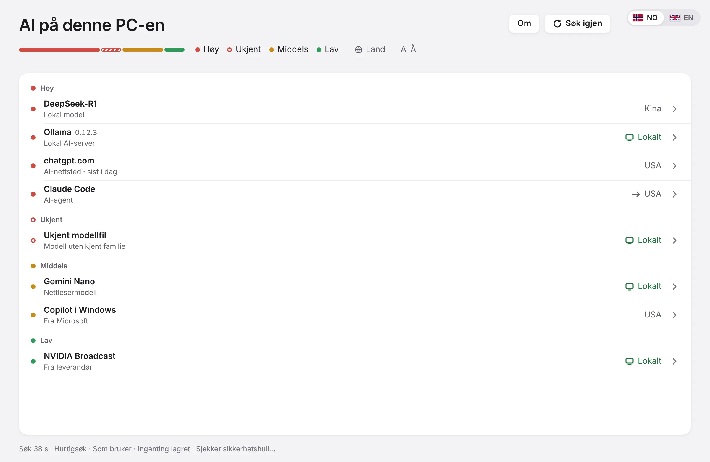
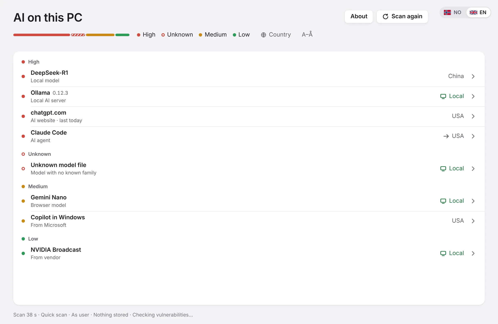

This page is in Norwegian only for now.
…
Se all AI på PC-en
See all AI on your PC
Finner AI-agenter, lokale modeller og skygge-AI på en Windows-PC, og sorterer dem etter risiko. Én knapp.
Finds AI agents, local models and shadow AI on a Windows PC, and sorts them by risk. One button.
Last ned gratis for WindowsDownload free for WindowsBare for Windows 10 og 11. Virker ikke på Mac, Linux, iPhone eller Android.
Én fil, ingen installasjon · Åpen kildekode (MIT)
Windows 10 and 11 only. Does not work on Mac, Linux, iPhone or Android.
One file, no install · Open source (MIT)


Hva den søker etter
What it looks for
Lokal AI
Modellfiler (GGUF, safetensors, PyTorch, ONNX m.fl.), også uten navn. AI-servere som Ollama og LM Studio. Programmer med AI-motor.
Local AI
Model files (GGUF, safetensors, PyTorch, ONNX and more), even unnamed ones. AI servers like Ollama and LM Studio. Programs with an AI engine.
Nettleser
AI-nettsteder som er brukt, AI-utvidelser og modeller i nettleseren som Gemini Nano. Bare AI-domener, aldri fulle adresser.
Browser
AI websites that have been used, AI extensions and in-browser models like Gemini Nano. AI domains only, never full addresses.
Skjult på PC
AI-agenter og kodeverktøy, AI fra leverandører, AI-nøkler (aldri verdien), registeret og programmer som sender data til AI-tjenester.
Hidden on the PC
AI agents and coding tools, vendor-installed AI, AI keys (never the value), the registry and programs that send data to AI services.
Angrepsspor
MCP-servere, «godkjenn alt» i agenter, farlige modellfiler, kjente dårlige pakker og mønstre fra kjente angrep på AI-agenter.
Attack traces
MCP servers, «approve all» in agents, dangerous model files, known bad packages and patterns from known attacks on AI agents.
Vakt
Følger AI-agentene live mens vinduet er åpent, og varsler når de gjør noe kjent fra angrep. Regler fra ATR, SigmaHQ og MITRE ATLAS.
Watch
Follows AI agents live while the window is open and flags actions known from attacks. Rules from ATR, SigmaHQ and MITRE ATLAS.
Hvor data går
Hvilke land og tjenester AI-programmene er koblet til akkurat nå, og hvem som står bak modellen. Kinesisk og russisk AI merkes.
Where data goes
Which countries and services AI programs are connected to right now, and who is behind each model. Chinese and Russian AI is flagged.
Personvern
Privacy
Leser bare
Endrer, sletter og installerer ingenting. Kjører som vanlig bruker.
Read-only
Changes, deletes and installs nothing. Runs as a normal user.
Lagrer ingenting
Ingenting blir igjen etter søket, bare rapporten du selv velger å lagre.
Stores nothing
Nothing is left after the scan, only the report you choose to save.
Åpner aldri det private
Aldri passord, informasjonskapsler, skjemadata, nøkkelverdier eller samtaler med AI.
Never opens private data
Never passwords, cookies, form data, key values or AI chats.
Ingen AI inni
Faste, åpne regler med kilde. Samme PC gir samme svar. Ingen konto, ingen sky.
No AI inside
Fixed, open rules with sources. Same PC, same answer. No account, no cloud.
Gratis for alle
Free for everyone
For privatpersoner, skoler, kommuner og bedrifter. Ingen konto, ingen lisens å kjøpe. Kildekoden er åpen under MIT.
For individuals, schools, municipalities and businesses. No account, no licence to buy. The source code is open under MIT.
Last ned for WindowsDownload for Windows